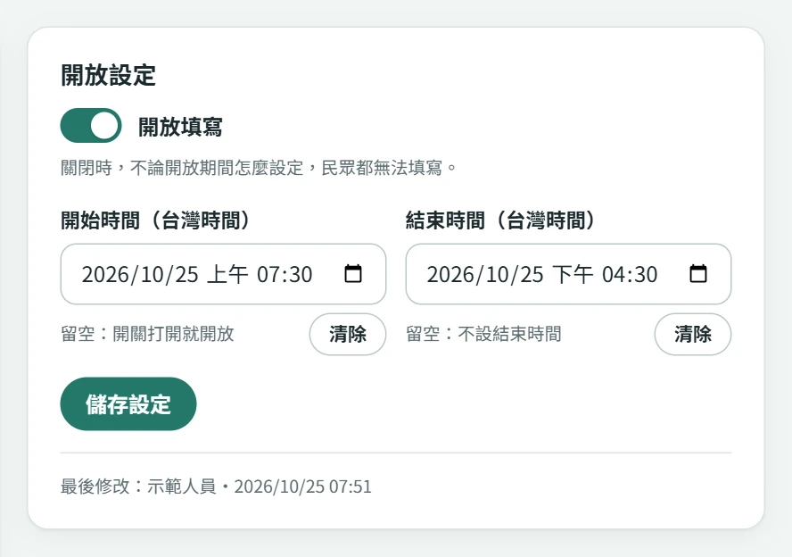
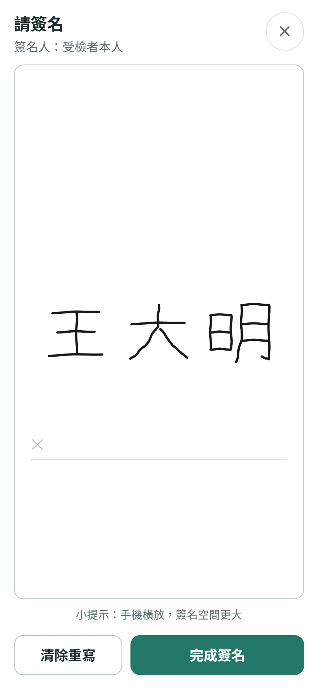
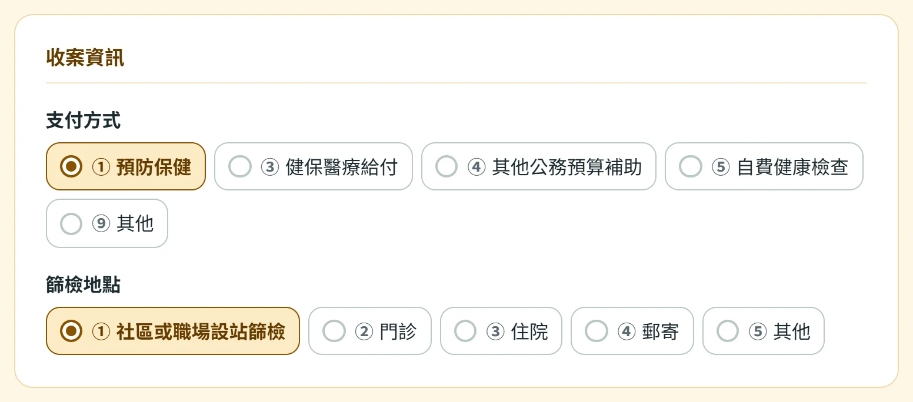

院外預防保健活動
在社區、職場或其他場地，讓民眾掃描 QR code 填寫，工作人員於後台接續處理。
重點：連線、引導填寫、現場核對預防保健服務 · 院方人員版
從事先填寫到現場核對，讓民眾少一點等待。依服務情境安排電子表單、紙本與院所確認的銜接。
先決定何時請民眾填寫，再安排由誰接續核對。
在社區、職場或其他場地，讓民眾掃描 QR code 填寫，工作人員於後台接續處理。
重點：連線、引導填寫、現場核對配合既有報到與紙本作業，先以電子表單收集資料；需要紙本時再依院內流程列印、補填或留存。
重點：安排電子與紙本的交接點由承辦人事先提供指定表單網址或 QR code，請受檢者在到院前完成送出，減少現場填寫時間。
重點：事前開放、確認送出、到場核對院外、院內與事先填寫，都先確認以下事項。

以下保留第一版中仍可參考的截圖，皆為示範資料。證件入口與結果通知已依現行流程重新說明；版面與欄位請以實際系統為準。
依服務項目、資格查詢結果或公司安排，告訴民眾要填哪幾張。填寫表單本身不代表已完成資格審核或報到。

開啟下一張指定表單，使用同一支手機、同一瀏覽器與相同證件資料。在暫存仍有效時，系統可帶入先前的基本資料；請重新核對，並完成每一張表單的送出。
接續填寫「院所填寫區」，留意自動儲存結果。成人預防保健另安排民眾完成院所區的同意簽名。
在「院所確認」核對民眾問卷，確認後送出。需要修正答案時，請受檢者在原裝置退回修改並重新送出。

後台顯示已完成後，案件已鎖定。依院所安排接續報到、檢查或資料留存。
按列印 / 另存原樣 PDF。核對列印內容，再銜接原有紙本補填、簽核與歸檔流程。
以後台已收到的資料為準。受檢者到場時核對身分與填寫內容，避免因手機暫存到期而要求重填。
關閉新預約或新增停診日，仍可管理已送出的案件。通知功能依寄件設定運作，符合院所確認條件的新案件於整點彙整通知；日常處理仍以後台案件為準。
出生日期使用民國年。按查詢與預約；有有效預約時先顯示既有資料，查無預約且目前開放時，才可建立新預約。
畫面會查詢當日已有幾人預約，等人數查詢完成後再繼續。可選日期以畫面為準。
可先查看「套餐說明」，核對日期與套餐後按送出預約。確認成功結果後，狀態為「待院所確認」。
從這筆預約內按填寫健康檢查表，填妥後按送出勞工健康檢查表。請由預約內的入口填寫，讓表單與本次預約關聯。
| 健檢套餐 | 勞工健康檢查表 |
|---|---|
| 一般勞工體格檢查（在職） | 須先送出健檢表，院所才能確認預約。 |
| 新進勞工體格檢查 | 可依需要填寫；院所核對預約日期與套餐後確認。 |
| 新進勞工體格＋B肝檢查 | |
| 餐飲業體檢（新進勞工＋食品類） |
| 畫面狀態 | 代表什麼／接著怎麼做 |
|---|---|
| 待院所確認 | 院所已收到預約，仍須核對。必填健檢表未送出時，先請民眾補齊。 |
| 預約已成立 | 院所已確認。民眾可更新狀態，並使用「加入 Google 行事曆」另行儲存提醒。 |
| 預約已取消 | 該筆預約已失效，關聯健檢表亦失效。需要重新安排時，先洽院所確認。 |
| 想做的事 | 操作方式 |
|---|---|
| 查詢是否成立 | 重新開啟預約入口，輸入相同證件資料與生日；在預約摘要按更新預約狀態。 |
| 補填或查看健檢表 | 使用送出預約時的同一瀏覽器，從預約摘要進入填寫健康檢查表或檢視健康檢查表。 |
| 修正健檢表 | 預約日前且系統仍允許修改時，在健檢表按退回修改；修改後重新完成適用簽名並送出。在職套餐經院所確認預約後即無法自行修改，請洽院所。 |
| 取消或改約 | 在系統允許取消時，於預約摘要按取消預約，核對提醒後按確認取消預約。取消會使關聯健檢表一併失效。需要改日期或套餐時，先聯絡院所確認安排。 |
以下為一般電子表單；預約案件請依 B 區說明處理。
| 遇到的情況 | 處理方式 |
|---|---|
| 尚未送出 | 直接修改答案，再按「確認送出」。 |
| 已送出、院所尚未完成 | 在原裝置的完成畫面按退回修改，確認結果後修改；重新完成適用簽名，再按「確認送出」。 |
| 院所已完成並鎖定 | 工作人員核對案件後，於後台按取消送出。原裝置仍具存取權限時，民眾可退回修改；院所區也可重新處理。 |
| 證件種類或號碼填錯 | 已送出案件的證件資料無法在修改時直接變更。請洽工作人員核對，必要時以正確證件重新填寫，再於後台確認舊案是否應作廢。 |
| 顯示「民眾修改中」 | 等民眾重新送出後，院所才能確認送出；有院所填寫區的表單可先補填院所內容。 |
| 顯示「可能重複」 | 比對表單、證件號、送出時間與內容，確認多餘案件後再按作廢。誤作廢可篩選「已作廢」並開啟案件按復原。 |
| 暫存過期、換機或已清除 | 先在後台查核已送出的案件。需要修正而原裝置已無法存取時，洽院所安排；如需重填，核對新舊案件後處理重複資料。 |
先核對畫面結果，再決定下一步。
成功送出的資料可由工作人員在後台查核。手機暫存從首次存入起保留 12 小時，逾期後會在後續存取時清理；它與院所已收到的案件分開管理。請在填寫期限內完成送出，到場時核對後台資料。
先用同一裝置、同一瀏覽器開啟原表單，必要時輸入相同證件資料。暫存及裝置權限仍有效時可續填或查看；無痕模式、清除瀏覽資料、換機或超過有效期間，可能無法恢復。已送出的資料先請工作人員查後台。
請管理者確認該表單「開放填寫」已開啟，而且現在位於開始、結束時間內。事先填寫的表單也要提早開放。預約健檢另有「開放預約」與可預約日期設定。
讀取結果視窗，關閉後保留目前答案，確認網路再重試。等待齒輪提示結束前不要重複點按；若不確定是否成功，先核對完成畫面或請工作人員查後台，避免重填多份。
先確認民眾確實看到成功結果，再核對表單種類、姓名、證件號與送出時間。表單種類與狀態各至少勾選一項，必要時用「條件全選」再篩選；預約案件請包含「預約健檢」。
需等院所確認預約成立後才開放。在職套餐另須先從該筆預約內送出勞工健康檢查表。可按「更新預約狀態」查看最新結果。
「清除此裝置上的暫存資料」清理的是裝置資料與連線權限，並不等於作廢院所已收到的案件。清除後可能無法再從該裝置退回修改，請先確認；需取消健檢預約時，使用 B 區的取消預約流程。